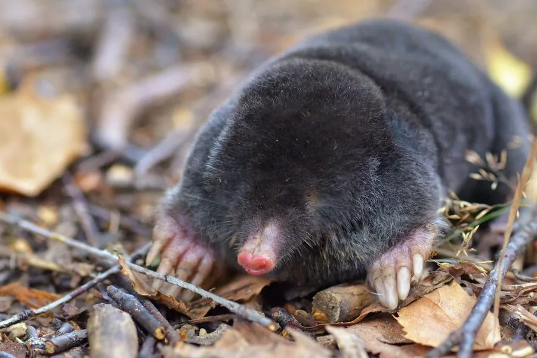

哺乳动物 · 动物界
欧洲鼹鼠 Talpa europaea

欧洲地下生活的小型哺乳动物，前爪宽大如铲、眼睛退化，靠挖掘隧道捕食蚯蚓，皮毛柔软可向任意方向倒伏。
- 分类
- 门脊索动物门纲哺乳纲目鼩形目科鼹科属鼹属
- 栖息环境
- 草地、农田、森林与花园的松软土壤
- 地理分布
- 欧洲大部分地区，从英国、法国到俄罗斯西部
- 保护级别
- IUCN 无危（LC）；非中国分布物种
物种志
欧洲鼹鼠体长 13–16 厘米，体重 65–120 克。它的身体呈圆柱形，覆盖黑色至深灰色的短毛，毛皮柔软、没有方向性，在隧道中进退都不会被毛阻碍；前肢粗短，手掌宽大如铲，向外翻转，适合挖掘；眼睛极小，藏在皮下，视力很差，嗅觉和触觉发达。
欧洲鼹鼠分布于欧洲大部分地区，栖息在草地、农田、森林和花园的土壤中，一生几乎都在地下隧道里度过。它挖掘复杂的浅层和深层隧道，捕食蚯蚓、昆虫幼虫和蜗牛，食量很大，每天要吃下接近体重一半的食物。鼹鼠在地面留下成堆的土丘，是花园中常见的痕迹。雌性妊娠期约 4–5 周，每胎 3–5 仔，寿命约 3–5 年。欧洲鼹鼠被列为无危。
形态与习性
- 食性蚯蚓、昆虫幼虫与蜗牛
- 体长13–16 cm
- 体重65–120 g
- 寿命3–5 年
- 繁殖妊娠约 4–5 周，每胎 3–5 仔
- 前爪宽大如铲，向外翻转
趣味知识
- 欧洲鼹鼠的前爪宽大如铲，是高效的挖掘工具。
- 它的眼睛极小、藏在皮下，主要靠嗅觉和触觉活动。
- 鼹鼠皮毛柔软无方向性，在隧道里进退自如。